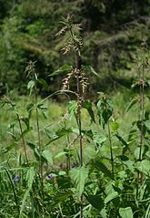
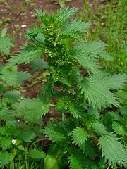
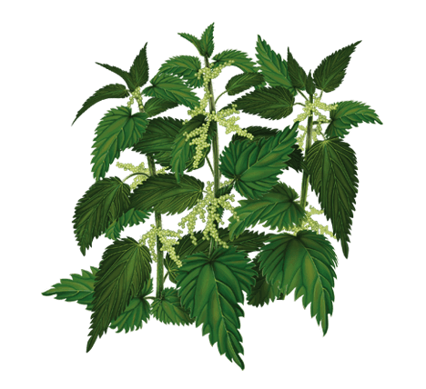
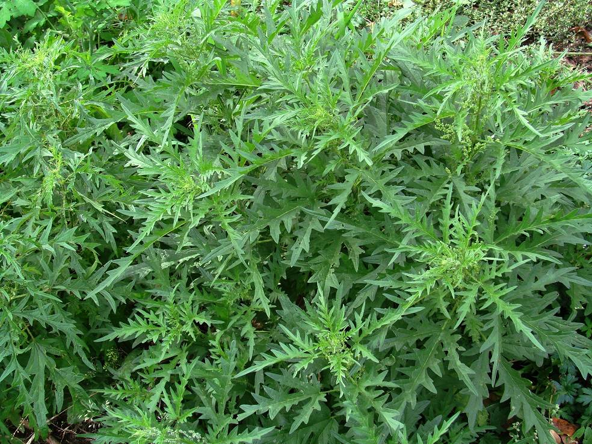
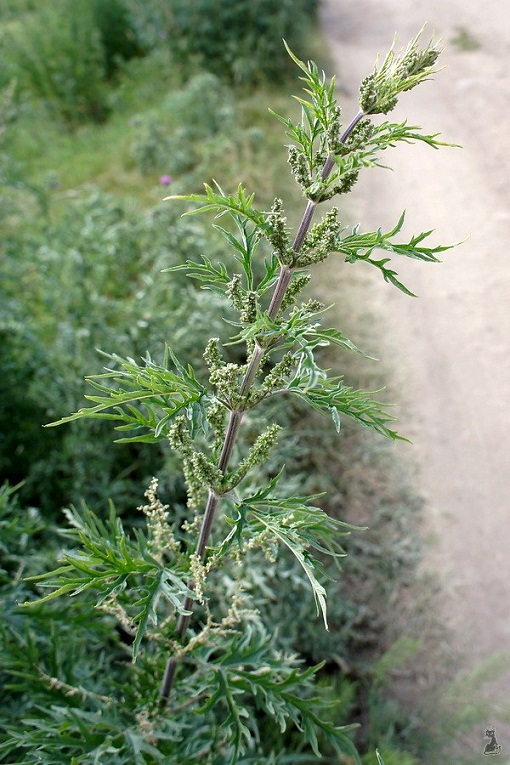
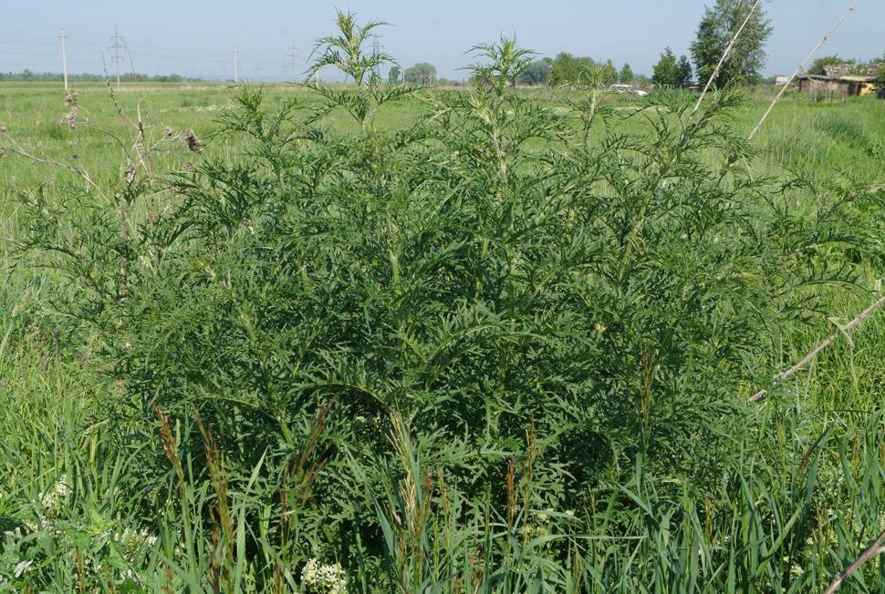
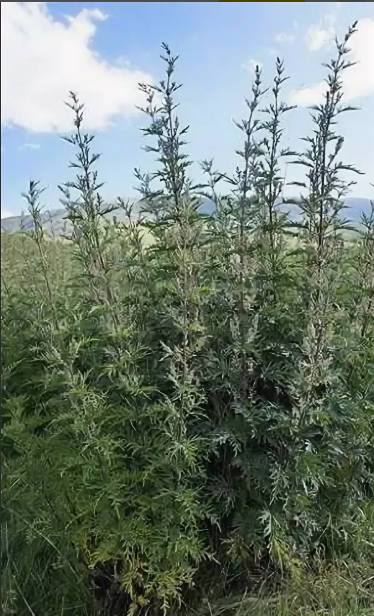

Крапивка родимая
Изменено 25 февраля 2019 года. Статья старее, манускрипты повреждены.
Хакасия – это чудо России! И Россия не стесняется чудить над Хакасией. Хакасы – коренной народ Хакасии. Хакасы – гордость России, но Россия не гордится хакасами. Река Абакан – жила Хакасии, но Россия не живится кристальной водой р. Абакана.
Река Абакан основала город Абакан, столицу Хакасии. Хакасия благодарна Абакану. Реке Хакасии Абакану. Мы, хакасы, тоже благодарны ей.
Люди умеют быть благодарными не только милым взглядом, но и устно, то есть речью, а растения, не могут говорить. Поэтому, мы вам скажем «Спасибо!» за них!
Спасибо!!!
 Ну что ж, пришла пора рассказать вам про эти растения Хакасии, зачем же мы передаём вам от них благодарность? Существует такое растение, название которого крапива. Мы – крапиворожденные. Крапива – наша гордость, а мы, гордость крапивы. Любой, кто позариться на нашу любимую гордость крапиву, получит крапивой по заду. Заднему месту заднице, а если задница защищена от крапивы, то получит по лицу ею. Сейчас вы видите справа нашу дарительницу радости крапивушку.
Поздравляем!!!
Крапива произрастает в нашем районе Космосе, преимущественно в «белом» дворе, преимущественно на холмике и возле заборов. Также она произрастает на входе в «белый» двор. Предание гласит, что она появилась благодаря консервативным и детоненавистным бабулькам и дедулькам, которые упорно прогоняли всех тех детей, которые не относились к племени «белого» двора. Они громко и грубо кричали из окон: «Изыди нечисть в своё племя, играй там, глупец, не забывай, куда ты пришёл». А если иноземец не повиновался гласу старших, они бесстрашно и бесчувственно срывали целые веники крапивы у самого основания, где иглы огромны и страшны, налитые до края с избытком муравьиной кислотой, и невозмутимо, быстро приближались к нарушителю их закона и безжалостно атаковали смелых и слабоумных, без разбору.
Бедные дети бежали, а их догоняли старики, махая этими вениками. Семена крапивы разлетались по всему холму, куда обычно ходили детишки, и входу во двор. С тех пор крапивы там неисчислимое количество произрастает.
Шло время, и поколения менялись. Крапивы стало много, а использовать её было не на кого.
Мы были свидетелями этих нападений со стороны стариков, да и сами чуть не становились их жертвами. А потом становились. И мы стали думать и понимать, что с этим нужно бороться. Немедленно. Так основался культ крапиворождённых.
Мы стали познавать всю силу крапивы. Для начала мы начали экспериментировать над великим растением крапивы.
Началом стала жгучая крапива, которая произрастала возле подъездов. Мы фиксировали научный прогресс на видеопленку. Наблюдали за изменением эпидермиса человеческого на руке. Ногах и рту на языке. Далее мы пошли искать вещь помощнее. И мы нашли более жгучую крапиву средних размеров. Тогда появилась идея классификации крапивы по жгучести. Было несколько уровней, а последний был недостижим. Просмотрите следующую таблицу, составленную специалистами и лаборантами, основателями культа крапиворождённых.
| Уровень | Внешний вид | Описание ощущений |
|---|---|---|
| 1 (0) нулёвка |  | Это была приятная встреча, будто любимый человек пощекотал тебя пером птичьим. Её мы даже спутали просто с травой. Только через время поняли, что это крапива, после детального осмотра и нахождения жал. Они жалят, но совсем незаметно и ласково. Чувствуется приятное жжение и желание почесать это место. Волдыри появляются, но незаметно. Боль от удара крапивой перебивает боль укуса. |
| 2 (1) детская |  | С этого уровня уже чувствуется боль. Она переполнена жалами, но из-за молодости и ласковости жалит по-детски. Листья сверху покрыты иглами. Детская крапивка, которая жалеет любого пострадавшего. Волдыри стандартные и их много, как иголок. |
| 3 (2) класик |  | Чуть сильнее детской, но опасность её в том, что её можно спутать с более сильным уровнем. |
| 4 (3) Классик +- | Обладает сильным разбросом в болевых ощущениях. | |
| 5 (4) Крепостная | Становиться серьезным испытанием для некоторых. Безусловно заставит ретироваться ребёнка до 12 лет. | |
| 6 (5) Бронебойная |  | Оружие массового поражения. Обладает большой прочностью (долго хранится) и имеет эффект долгодействия. Пробивает одежду. Боль в пальцах становится нетерпимой. Боль пульсирующая. |
| 7 (6) Гигант |  | Пробивает джинсы. Иглы придётся доставать из кожи. Бабки даже не смотрят в её сторону. От её боли даже мужики будут стонать и бегать. Отпугивает всех детей в радиусе от 10 метров. |
| 8 (7) Исполинская |  | Человек не в состоянии разговаривать, не может стоять и держать равновесия, а также проявляется бред. Возможны неконтролируемые стоны и плач. Болевые ощущения такой силы приходится испытывать очень малому количеству людей на планете. Пульсирующая боль неотличима от сокращений сердца. Волдыри здоровые. Чтобы убить неподготовленного человека болевым шоком, нужно попасть водой на место укуса |
Вопросы и ответы
Данный документ был изменён в 2019 году, а написан и то позже. Что сейчас с культом?
Правда, документ старее. Даже не могу ответить, существует культ или нет, но все основатели живы и один из них разведует обстановку в другом регионе России. Если будут правки, то обязательно отобразяться здесь и будут датированы.
Эволюционирует ли крапива?
Точных данных нет, но мы по крайней мере уверены, что крапива не способна к стремительным изменениям в Хакасии дорогая наша Хакасия!
Когда новые статьи
Да прибудет с нами сила Крапивы! Работы над развитием культа ведуться, но силы наши на пределе. Не молодые мы уже. Ждите новостей, когда пройдёт зимушка мы дождёмся появления исполинской царевны и пройдём испытание, ибо стали мы крепче, а кожа суровее!